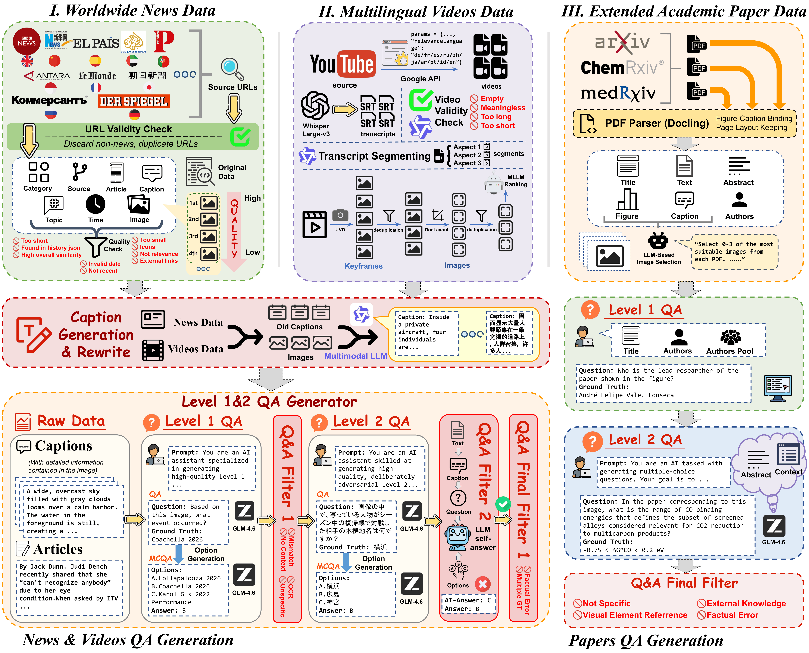
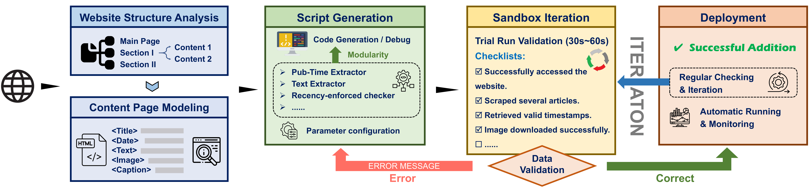

Abstract
Knowledge about the visual world is not only constantly evolving but also inherently happening all over the world: breaking news in Tokyo, political events in São Paulo, and cultural phenomena in Cairo are first reported in Japanese, Portuguese, and Arabic, carrying regional context that English-centric resources cannot fully capture. Yet existing resources for visual knowledge remain confined to English, creating a Worldwide Knowledge Gap that hinders developing truly global assistants. To quantify this gap, we introduce LiveVQA-Worldwide (LIVEVQA-W), the first dynamic-updating dataset for real-time, multilingual visual knowledge seeking and updating across ten major languages. Drawing from worldwide news outlets, YouTube videos, and academic platforms during August–December 2025, LIVEVQA-W comprises 234K images, 873K questions, and 171K visual entities with hierarchical evaluation: Level 1 for visual entity recognition and Level 2 for multi-hop cross-lingual reasoning. Our comprehensive benchmarking of 15 state-of-the-art MLLMs reveals that models without search achieve near-random performance, while search-augmented models exhibit severe linguistic bias, with English accuracy nearly double that of other languages. Furthermore, we explore visual knowledge updating through large-scale training, finding that injected knowledge improves recall but remains fragile under prompt rephrasing and image perturbations such as rotation and flipping. We release the fully replicable data collection pipeline and dataset to support continuous community-driven expansion.
LIVEVQA-TOOLBOX

We develop LiveVQA-Toolbox, a comprehensive toolkit that continuously harvests fresh visual content from diverse online sources to facilitate automated visual knowledge collection. As shown in the figure above, the toolbox automates the entire data acquisition workflow: from crawling prominent news outlets across different countries, to processing complex image-text interleaved documents, to extracting the most representative visual content from news articles, video platforms, and academic.
Agent-driven Crawler Generation System

When adding a new source, the system first analyzes the page structure and models content elements (title, date, text, images, captions). A coding agent then generates modular extraction scripts with appropriate configurations, which are deployed into a sandboxed environment for trial-run validation. The system automatically verifies successful access, article scraping, timestamp retrieval, and image downloading. If errors occur, the agent iteratively debugs based on error messages until all checks pass, after which the crawler is seamlessly integrated with regular monitoring.
LIVEVQA-W(ORLDWIDE)
| Category | Images | #Question | Level 1 | Level 2 |
|---|---|---|---|---|
| Dataset | ||||
| News | 172,981 | 657,936 | 162,720 | 495,216 |
| Videos | 45,612 | 167,881 | 41,149 | 126,732 |
| Papers | 15,693 | 47,079 | 15,693 | 31,386 |
| Avg. per Picture | 1 | 3.73 | 0.94 | 2.78 |
| Overall | 234,286 | 872,896 | 219,562 | 653,334 |
| Test Split | 500 | 500 | 250 | 250 |
| Training Split | 9,605 | 35,266 | 8,949 | 26,317 |
| Benchmark | ||||
| News | 196 | 200 | 100 | 100 |
| Videos | 195 | 200 | 100 | 100 |
| Papers | 95 | 100 | 100 | 100 |
Benchmark Display
Example 1: Arabic
استنادًا إلى هذه الصورة، ما هو التاريخ الذي صرح فيه أعضاء الوفد بتصريحاتهم من القصر؟ (بدقة إلى اليوم والشهر والسنة)
- A. 31 أغسطس 2025
- B. 26 أغسطس 2025
- C. 27 أغسطس 2025
- D. 25 أغسطس 2025
في الصورة، نقاش حول الخطة الاستثمارية. ما هو العام المالي المحدد لذلك؟
- A. 2025-2026
- B. 2024-2025
- C. 2026-2027
Example 2: Chinese
基于这个图像，火灾发生在哪里（精确到市）？
- A. 太原市
- B. 吕梁市
- C. 长治市
- D. 大同市
在图像中展示的活动举办后多少天，相关国际峰会在同一城市正式开幕？
- A. 26
- B. 25
- C. 28
- D. 23
Benchmark Results
We evaluates 15 state-of-the-art Multimodal Large Language Models (MLLMs) on their ability to seek worldwide visual knowledge. Findings reveal that offline models perform poorly on complex visual factuality tasks. While search-augmented models demonstrate dramatically improved accuracy and better confidence calibration , they suffer from a severe "multilingual curse". Performance in English significantly outpaces other languages. Error analysis attributes this disparity primarily to search engine retrieval failures for non-English sources, rather than the models' intrinsic reasoning deficits.
| Model | Correct | Not attempted | Incorrect | Correct & given attempted | F-score |
|---|---|---|---|---|---|
| w.o. Search | |||||
| Claude Sonnet 4.5 | 3.4 | 82.2 | 14.4 | 19.1 | 6.0 |
| Gemini 3 Flash Preview | 16.8 | 3.2 | 80.0 | 17.4 | 17.4 |
| Gemini 3 Pro Preview | 19.8 | 2.8 | 77.4 | 20.4 | 20.6 |
| Gemma 3 27B | 5.4 | 32.8 | 61.8 | 8.0 | 6.3 |
| Mistral Medium 3.1 | 6.8 | 57.0 | 36.2 | 15.8 | 9.3 |
| GPT-5.2 | 5.2 | 73.2 | 21.6 | 19.4 | 8.6 |
| GPT-o3 | 9.6 | 50.6 | 39.8 | 19.4 | 13.0 |
| Qwen3 VL 235B A22B Thinking | 6.0 | 51.0 | 43.0 | 12.2 | 8.0 |
| Grok 4 | 8.8 | 40.4 | 50.8 | 14.8 | 10.9 |
| GLM 4.6V | 4.2 | 82.0 | 13.8 | 23.3 | 6.7 |
| w. Text & Image Search | |||||
| GPT-5.2:online | 35.0 | 34.6 | 30.4 | 53.5 | 42.1 |
| GPT-o3:online | 30.8 | 34.4 | 34.8 | 47.0 | 37.4 |
| MMSearch-R1 | 13.0 | 20.6 | 66.4 | 16.4 | 14.8 |
| WebWatcher-7B | 25.8 | 18.0 | 56.2 | 31.5 | 28.4 |
| WebWatcher-32B | 26.6 | 12.2 | 61.2 | 30.3 | 28.1 |
| Model | Avg. | Arabic | Chinese | English | French | German | Indonesian | Japanese | Portuguese | Russian | Spanish |
|---|---|---|---|---|---|---|---|---|---|---|---|
| w.o. Search | |||||||||||
| Claude Sonnet 4.5 | 3.75 | 2.50 | 2.50 | 5.00 | 5.00 | 2.50 | 2.50 | 2.50 | 5.00 | 7.50 | 2.50 |
| Gemini 3 Flash Preview | 17.50 | 15.00 | 17.50 | 15.00 | 15.00 | 20.00 | 15.00 | 20.00 | 22.50 | 22.50 | 12.50 |
| Gemini 3 Pro Preview | 19.50 | 7.50 | 25.00 | 17.50 | 20.00 | 25.00 | 15.00 | 20.00 | 22.50 | 25.00 | 17.50 |
| Gemma 3 27B | 4.00 | 5.00 | 0.00 | 2.50 | 2.50 | 5.00 | 0.00 | 2.50 | 7.50 | 7.50 | 7.50 |
| Mistral Medium 3.1 | 6.25 | 10.00 | 10.00 | 10.00 | 5.00 | 2.50 | 5.00 | 0.00 | 7.50 | 5.00 | 7.50 |
| GPT-5.2 | 4.75 | 5.00 | 10.00 | 0.00 | 5.00 | 5.00 | 2.50 | 5.00 | 2.50 | 5.00 | 7.50 |
| GPT-o3 | 9.00 | 10.00 | 7.50 | 7.50 | 17.50 | 5.00 | 7.50 | 7.50 | 7.50 | 7.50 | 12.50 |
| Qwen3 VL 235B A22B Thinking | 4.75 | 5.00 | 7.50 | 2.50 | 7.50 | 0.00 | 0.00 | 0.00 | 5.00 | 12.50 | 7.50 |
| Grok 4 | 8.75 | 5.00 | 10.00 | 10.00 | 7.50 | 15.00 | 5.00 | 10.00 | 10.00 | 10.00 | 5.00 |
| GLM 4.6V | 3.75 | 2.50 | 2.50 | 5.00 | 5.00 | 2.50 | 0.00 | 5.00 | 5.00 | 7.50 | 2.50 |
| w. Text & Image Search | |||||||||||
| GPT-5.2:online | 26.25 | 25.00 | 32.50 | 40.00 | 22.50 | 20.00 | 22.50 | 15.00 | 22.50 | 27.50 | 35.00 |
| GPT-o3:online | 25.75 | 30.00 | 25.00 | 35.00 | 20.00 | 22.50 | 17.50 | 22.50 | 25.00 | 30.00 | 30.00 |
| MMSearch-R1 | 10.50 | 15.00 | 7.50 | 22.50 | 0.00 | 17.50 | 2.50 | 2.50 | 20.00 | 7.50 | 10.00 |
| WebWatcher-7B | 23.00 | 20.00 | 22.50 | 47.50 | 27.50 | 20.00 | 22.50 | 12.50 | 20.00 | 12.50 | 25.00 |
| WebWatcher-32B | 24.75 | 17.50 | 15.00 | 55.00 | 25.00 | 30.00 | 25.00 | 17.50 | 25.00 | 10.00 | 27.50 |
Findings
Search-augmented models outperform offline models across languages.
Among models without web access, Gemini-3 family achieves the highest accuracy on both Level 1 and Level 2 tasks, significantly outperforming other non-retrieval baselines. However, even the best offline model remains far behind search-augmented systems, highlighting the limitations of purely parametric knowledge in complex visual factuality tasks. Models equipped with search capabilities demonstrate a dramatic performance gain. For instance, GPT-o3:online attains an accuracy of 39.2% on Level 2 tasks, nearly four times higher than the best offline model. This underscores the critical role of external retrieval in handling real-world, time-sensitive queries.
Multilingual curse remains in visual factuality seeking, where search-augmented models exhibit strong language bias toward English primarily due to fundamental retrieval bottlenecks.
Cross-lingual evaluation reveals a stark disparity: offline models maintain relatively balanced performance, whereas search-enabled models perform significantly better in English and Spanish than in other languages. For example, GPT-5.2:online scores 40.0% in English but falls below 25% in low-resource languages. This indicates that current multimodal retrieval pipelines are heavily optimized for English-centric web content.
Search-augmented models exhibit strong calibration compared to offline models.
Search-augmented models show better calibration compared to their counterparts, especially GPT-o3:online, reaching 37.4 F-score and only slightly below the ideal y=x line, indicating that using the search tool releases overconfidence in visual factuality seeking and underscoring substantial opportunities for improving MLLM calibration.
Multilingual visual factuality injection suffers from poor cross-lingual generalization, and MCQA training fails to facilitate effective knowledge memorization.
We find that although models exhibit improved memorization of visual factual knowledge, their ability to establish cross-lingual associations remains notably weak, where the corresponding training language significantly outperforms that in other languages. Multilingual visual factuality injection does not generalize well across languages, and substantial gaps between languages persist (>8%). This remains an open challenge that warrants further investigation. Furthermore, we observe that training with the MCQA format contributes minimally to factuality memorization; the model fails to internalize these knowledge entities or establish meaningful associations.
The model degrades a lot under linguistic and query style changing, and removing images and flipping also harm visual entity recognition.
Perturbation experiments reveal that vertical flipping causes the most severe drop in accuracy compared to other spatial transformations. Since the dataset focuses on visual entities without physical dynamics, this sensitivity suggests the model does not learn robust, rotation-invariant features. Instead, its recognition capability is anchored to the standard upright views and absolute spatial configurations present in the training data, leading to failure when the input deviates from this fixed layout.